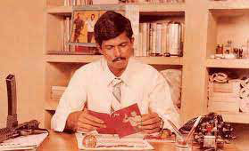
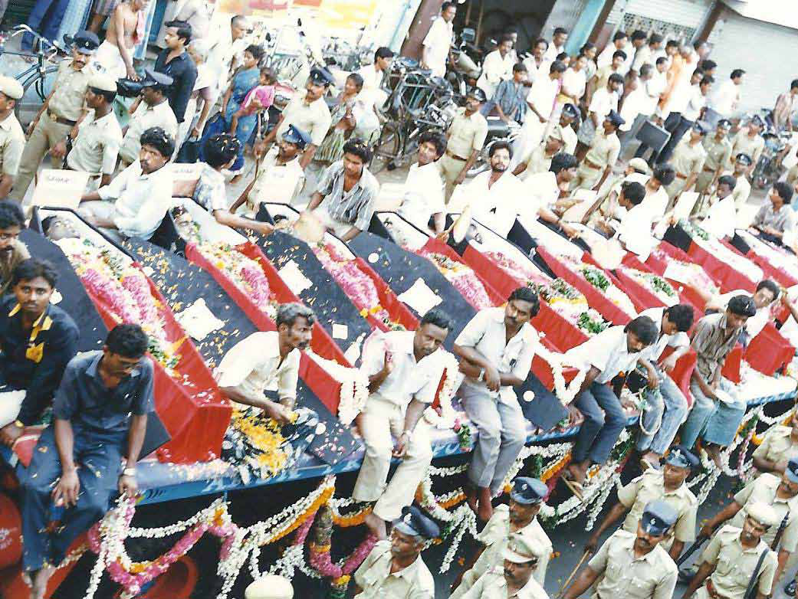
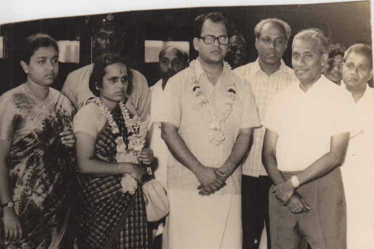
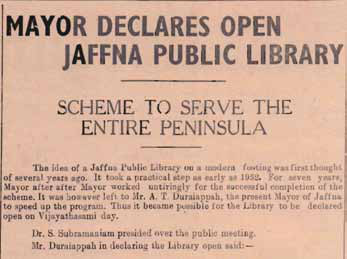
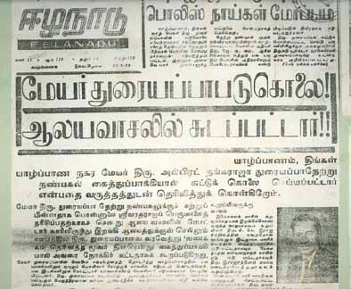
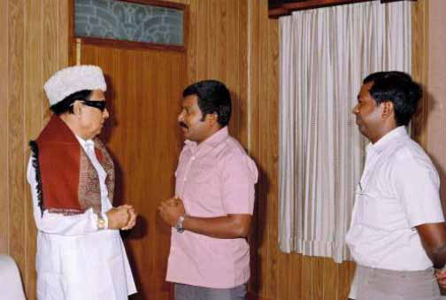

Anton Master Speaks:
Anton Master Speaks:
Jaffna Monitor hellojaffnamonitor@gmail.com 37 Anton Master Speaks: dialogue Former Military Office Chief of LTTE Shares His Untold Story with 'Jaffna Monitor' BY: Kaniyan Pungundran fzpad; G+q;Fd;wd; LTTE's Annihilation of Rival Militants: A Condemnation of Injustice and Cruelty While there were clashes between the LTTE and TELO in Jaffna, I was stationed in Chennai, overseeing MO works. According to the reports I received, TELO operatives had abducted a prominent member of the Liberation Tigers. This led to a rescue attempt by key LTTE figures, during which a former bodyguard of Prabhakaran, who was part of the LTTE, was fatally shot by TELO members. This incident sparked the conflict between the LTTE and TELO. Part- 4 KT Sivakumar, also known as Anton Master, is a prominent early member of the Liberation Tigers of Tamil Eelam (LTTE) and a close associate of leader Prabhakaran. He significantly contributed to the LTTE as a member of its Central Committee and as the founder and head of the Military Office (MO), enhancing the group's military effectiveness. Known for his reticence in media interactions, Sivakumar prefers 'dialogues' over interviews. The following is a part of a series of dialogues I had with him, providing rare insights, which will be featured in the forthcoming issues. Sri Sabaratnam


Jaffna Monitor hellojaffnamonitor@gmail.com 38 I did not investigate this incident further, adhering to a non-interference policy in the operations of other LTTE sectors. Therefore, the specifics of Kittu's actions remained unknown to me. However, I was informed that under Kittu's command, the Tigers killed the TELO leader, Sri Sabaratnam, and many TELO fighters. Years later, I learned that Sri Sabaratnam was captured alive and was shot dead despite pleading for mercy. This act is morally reprehensible and constitutes a crime against humanity. Similarly, after I left the LTTE in 1988 and moved to Canada, I heard reports that the LTTE had killed EPRLF leader Padmanabha and eight others in Chennai. This act is profoundly wrong and disgraceful. Reflections on LTTE's Early Executions: The Case of Alfred Duraiappah and Beyond Beginning in the early 1970s, especially during Alfred Duraiappah's tenure, Tamil youth in Sri Lanka increasingly embraced armed struggle as a perceived last resort for Tamil liberation. This shift, a response to feelings of oppression and marginalization where Tamils were perceived as second-class citizens, marked a significant turning point. This transition to militancy, however, presented considerable challenges. Many Tamil youths, lacking experience and guidance, found it difficult to navigate the complexities of armed Funeral of Pathmanabha and 14 Other EPRLF Members, Following the Kodambakkam Attack on June 19, 1990.

Jaffna Monitor hellojaffnamonitor@gmail.com 39 Newspaper cuttings reporting the news of former mayor Alfred Duraiappah's death South Indian singer Vijayabharathi with Alfred Duraiappah in Jaffna around 1969.



Jaffna Monitor hellojaffnamonitor@gmail.com 40 resistance while adhering to international humanitarian laws. Initially, this period did not feature an ideological framework associated with Velupillai Prabhakaran, nor was there a policy of executing individuals for non- alignment with such ideology. Over time, Prabhakaran's evolving leadership was characterized by strategic and tactical errors, contributing significantly to his downfall and the demise of the LTTE. These outcomes offer vital lessons for future generations about the complexities and challenges of conducting a freedom struggle. In the post-World War II era, the international community, striving to prevent future conflicts, established the Universal Declaration of Human Rights and various treaties. These documents highlight the critical importance of protecting human rights through the rule of law to dissuade individuals from rebelling against tyranny and oppression. This historical and legal context emphasizes the imperative of adhering to human rights standards in any movement, including those aimed at freedom and self-determination. Unfortunately, Prabhakaran and the LTTE did not heed these principles, a factor that played a role in their ultimate failure. LTTE's Early Internal Sanctions: The Michel and Parkunan Cases You are inquiring about the internal killings sanctioned by the LTTE's central committee, Prabhakaran with then Tamil Nadu Chief Minister MGR along with senior LTTE member Shankar. This photo was taken after a few months of Prabhakaran shaving his head to fulfill his vow after LTTE's first arms shipment arrived safely at LTTE's shores.

Jaffna Monitor hellojaffnamonitor@gmail.com 41 before it transitioned to sole leadership. Notable examples include the cases of Michel and Parkunan, which received the central committee's approval. However, these acts were not motivated by malevolence. The involved young men had drafted a constitution for their movement, believing it to be the optimal approach for their struggle. This rigidity and strict adherence to their rules and regulations, however, adversely affected the LTTE and its relationships with other movements. Reflecting on this later, I realized the impracticality of running a freedom movement with such a rigid constitution, particularly one that mandates the execution of anyone who leaves the organization to start a new one. Prabhakaran and God: A Glimpse into His Spiritual Devotion Prabhakaran possessed a deep religious devotion, yet he rarely expressed it openly. He showed little interest in religious rituals or cultural celebrations. When the Tigers were awaiting their first shipment of arms, Prabhakaran made a specific vow to a temple, though I am uncertain whether it was to the Palani Murugan or the Tirupati temple. Upon the safe arrival of the arms container in the hands of the LTTE, he shaved his head to fulfill this vow, subsequently wearing a cap for a period. I met him during another significant event in 1987 when Prabhakaran's wife, Mathivathani, and their children were expected to travel by boat from India to Jaffna. He appeared noticeably anxious about their journey. In a gesture of deep faith, he again pledged an offering to a temple for their safe arrival, although I am unsure whether it was to the Palani Murugan or the Tirupati temple. I could not remember the specifics of the offering. I did not know how he fulfilled this vow for his family's safe travel. Prabhakaran must have read the Bhagavad Gita, as he was fond of reading all kinds of books and wouldn't have missed it. However, I cannot assert whether the Bhagavad Gita inspired his killings. Regarding Hindu philosophy, first, there's 'I vs God,' then 'Soul vs God (Dualism) ,' and finally 'I vs I,' symbolizing 'I am that oneness.' I'm the God, the soul, the body, and everything (I am That-monism). I think Prabhakaran contemplated this third stage, believing in the Hindu philosophical concept of 'I am the killer, and I am killed.' He was ready to die, just as he was ready to kill. But he did not wish to be killed easily and maintained intense security measures around him. In terms of devotion, karma, wisdom, and yoga, as described in Hindu philosophy, I have seen him exhibit devotion and karma. However, he was not a religious fanatic. My house in Jaffna had pictures of Jesus, Buddha, and Gandhi in the living room. Later, I replaced Gandhi's picture with Swami Vivekananda's over time. Whenever Prabhakaran visited my room, he would look at the Buddha's picture and say nothing; even during our fight against Buddhist chauvinism, Buddha's picture was in my house, and he never objected to it. I believe Prabhakaran respected all religions and did not discriminate based on religion or caste. To be continued...